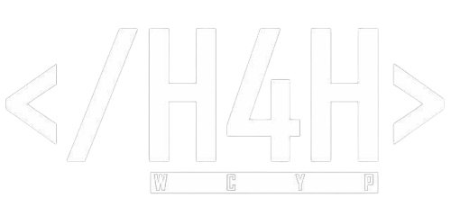
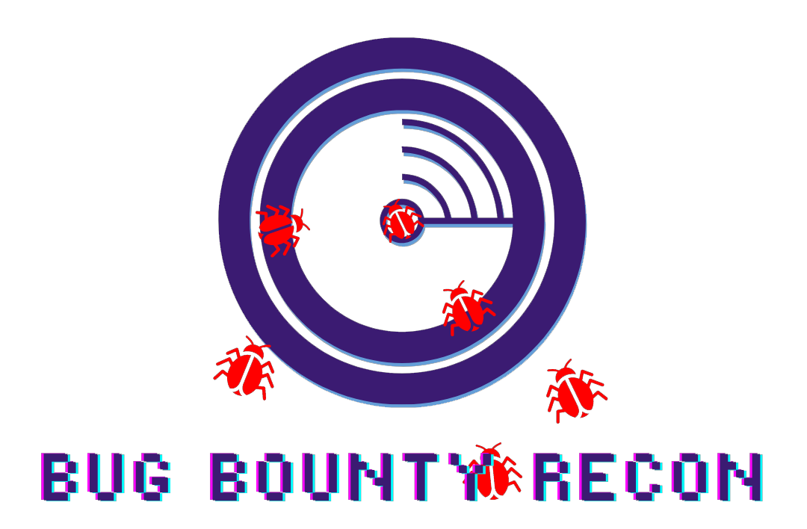

Home
About Us

Target:
Directory Listing
Configuration Files
Database Files
WordPress
Log Files
Backup and Old Files
DomainEye
Login Pages
SQL Errors
Apache config files
Robots.txt
Publicly Exposed Documents
PHP Info
Check Security Headers
Finding Backdoors
Install / Setup Files
Open Redirects
Apache STRUTS RCE
Third Party Exposure
Git Lab
Passive Total
Find PasteBin Entries
Employees on Linkedin
Htaccess sensitive files
Find subdomains
Find Sub-subomains
Find WordPress #2
Find WordPress (Wayback Machine)
Search in StackOverflow
Test in Cross Domain
.git folder
Digital Ocean spaces
Find .SWF File (Google)
Find .SWF File (yandex)
Search in GitHub
Traefik
S3 Buckets
API Endpoints - WSDL
PlainText password leak
Search in Bitbucket and Atlassian
Search in OpenBugBounty
Search in Reddit
Check In ThreatCrowd
Youtube
Search SWF in Wayback
Search in Wayback #2
Search in Wayback #3
What CMS
Cloud Storage and Buckets
Sourcecode - PublicWWW
Check in CENSYS [IPV4]
Check in CENSYS [DOMAINS]
Check in CENSYS [CERTS]
Search in Shodan
GitHub Gist Searches
Search in CRT logs